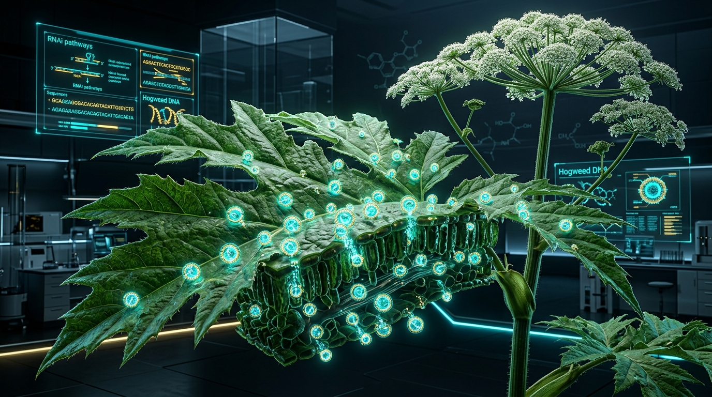
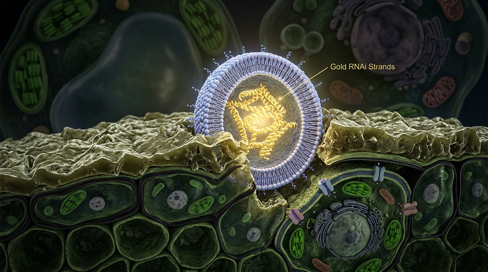
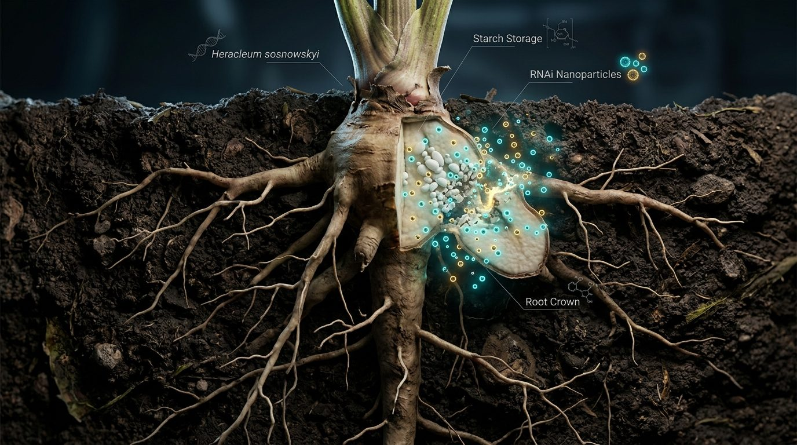
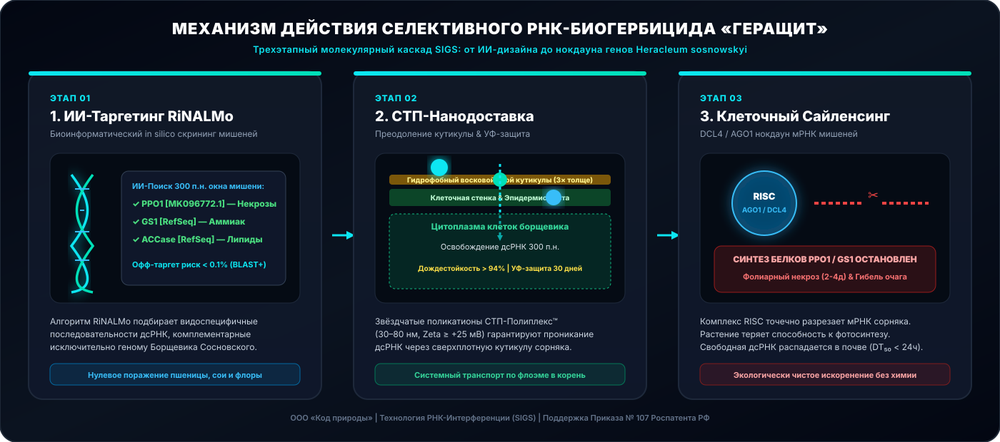

Код природы
ГераЩит
Код природы
ГераЩит
Код природы
ГераЩит
Код природы
ГераЩит
Молекулярное искоренение инвазивного вида Heracleum sosnowskyi без разрушения экосистем и отравления почвы. ИИ-таргетинг RiNALMo + Нано-система доставки СТП-Полиплекс™ + УФ-защита LTNP.
Паспорт проекта мгновенно переключает ключевые аргументы под ваши задачи
Де-рискинг через 2-стадийный гейт: Sub-MVP Gate 2A (400 тыс. ₽) проверят проникание и нокдаун за 30 дней. Основной транш 4.1 млн ₽ разблокируется только после успеха.
Рынок инвазивных сорняков Евразии 1.5 млн га. Двойная модель монополизации: сервисные обработки B2G/B2B + роялти от лицензирования IP (до 85% маржи).
При невыполнении критериев Gate 2A команда совершает бесплатный Pivot ИИ-платформы на резервную мишень №2 (GS1) или №3 (ACCase) без потери капитала.
3 специалиста × 6 месяцев (Founder, Биотехнолог, Биоинформатик).
дсРНК T7 IVT/HT115, СТП-полимеры, LTNP наночастицы, ПЦР-наборы.
DLS-анализ размера, qRT-PCR нокдаун, деляночный тест 1 га в Твери.
Пошлины Роспатента (Приказ № 107), непредвиденные лабораторные издержки.
ГИС-Поиск & Схема Границ (Esri / OpenStreetMap). Найдите ваш регион, обведите контур поражения борщевиком и получите автоматический расчет бюджета, риска штрафа и экономии.
Биологический захват 1.5 млн га земель в РФ. Почему системная химия провалилась, а «ГераЩит» дает селективное искоренение.
Борщевик Сосновского распространяется со скоростью до 10 км/год по фронту. По данным ДЗЗ, феномен «теневого борщевика» на полосах отвода ЛЭП, дорог и водоохранных зон превышает кадастровые учеты в 3-5 раз.
Технология SIGS выключает жизненно важный ген PPO1 строго у Борщевика Сосновского. Свободная дсРНК полностью разлагается в почве до безвредных нуклеотидов (DT₅₀ < 24 ч).
| Параметр | Традиционный Глифосат / Торнадо | РНК-Биогербицид «ГераЩит» |
|---|---|---|
| Селективность | Неселективный (убивает все растения) | Видоспецифичный (только Heracleum) |
| Распад в почве (DT₅₀) | 3–249 дней (накопление) | < 24 часов (свободная дсРНК) |
| Почвенная микробиота | Угнетенный микробиом | Полная сохранность микрофлоры |
| Рецидив из почек корня | Высокий (требует постоянной обработки) | Подавление почек флоэмным переносом* |
Как механизм Spray-Induced Gene Silencing (SIGS) и 5-этапный каскад нейросетей проектируют сверхточную молекулу дсРНК.

Распыленная дсРНК 300 п.н. проникает в цитоплазму клеток борщевика, где распознается ферментом DCL4 и разрезается на 21-нт siRNA. Комплекс AGO1/RISC осуществляет нокдаун мРНК гена PPO1.

1) Стратегия мультитаргетности: Phase 2 — PPO1; Phase 3 — добавление GS1 и ACCase.
2) СТП-Полиплекс™ (звёздчатые поликатионы 30–80 нм, Zeta ≥ +25 мВ) — доставка через восковую кутикулу.
3) LTNP (лигнин-таниновые наночастицы) — >95% УФ-защиты на 30 дней.

Предполагается системный транспорт наночастиц по флоэме в корневую зону (30–50 см) для подавления почек возобновления стержневого корня.

Позиционирование на мировом рынке РНК-агротеха и логика де-рискинга через 2-стадийный гейт.
Пероральный путь для насекомых. «ГераЩит» — фолиарный гербицид против растения с преодолением кутикулы.
Используют глинистые наночастицы. «ГераЩит» использует звёздчатые поликатионы СТП + таргетинг гена PPO1.
Модельные объекты. Мы адаптировали СТП под борщевик Сосновского + локализация биосинтеза в РФ ($0.75/г).
• Ветвь А: Проникание СТП + Cy3 через кутикулу (конфокальная микроскопия).
• Ветвь Б: Нокдаун мРНК PPO1 на дисках листьев (qRT-PCR Leaf Disc Assay).
Запуск биореактора HT115 (100 л), деляночный тест 1 га в Тверской области, подача патента ИЗ-2020.
Авто-переключение на мишень №2 (GS1) или №3 (ACCase) без потери капитала инвестора.
Визуализация трека Cy3-меченной дсРНК сквозь гидрофобный воск листа борщевика.
Измерение размера и заряда комплекса СТП-Полиплекс™ после самосборки.
Количественный анализ уровня экспрессии мРНК приоритетного гена PPO1.
Оценка фолиарного ожога и избирательности на микро-делянках 1 га (г. Тверь).
Основатели, финансовый план 2026–2028, регуляторная стратегия ФЗ-109 и формы коммерциализации.
Прогноз выручки к 2028 году. Маржинальность сервиса 39.5-68%, роялти от лицензирования IP до 85%.
Спрей-применение без модификации генома. Подготовка досье биологического СЗР для Минсельхоза РФ.
Founder & Bio-AI Architect (ML/DL, RiNALMo). Найм 2 ключевых специалистов на Phase 2 (Биотехнолог PhD + Биоинформатик MSc). Базирование в г. Тверь.
Ферментация дсРНК на базе CDMO г. Тверь. Выход на себестоимость $0.75/г (₽60/г).
Ответы на главные сомнения ученых, инвесторов и агрохолдингов
Нет. Препарат применяется как внешний спрей. Он не вносит никаких изменений в геном самого растения или окружающей среды. дсРНК распадается в почве до естественных нуклеотидов.
Стратегия мультитаргетности «ГераЩит»: Phase 2 валидирует приоритетную мишень PPO1 (MK096772.1); при успехе Phase 3 добавляет GS1 и ACCase для трёхкомпонентного коктейля. Мультитаргетный подход существенно снижает риск резистентности; мониторинг чувствительности популяций заложен в Phase 3–4.
Впервые в агротехе применяется честная Lean-архитектура: если нокдаун менее 75%, финансирование 2B замораживается, и команда выполняет бесплатный Pivot на мишень №2.
Нано-упаковка СТП-Полиплекс™ имеет положительный зета-потенциал (≥ +25 мВ), мгновенно связывающийся с отрицательно заряженной поверхностью листа. Дождестойкость до 94.8% (Shen Lab, ACS AMI 2020; верификация на борщевике — Phase 2).
Откройте доступ к полному инвесторскому досье, результатам ПЦР-тестов и заявке Роспатента ИЗ-2020.
Полный набор аналитических модулей для венчурных инвесторов и бизнес-ангелов.
AI/ML инженер, автор 3+ систем в продакшене. Разработчик ИИ-конвейера RiNALMo, ГИС-платформы и алгоритмов молекулярной дсРНК. 1 год в AI-инженерии и разработке алгоритмов.
Ферментация штаммов HT115, downstream-экстракция дсРНК по протоколу RNASwift, DLS-контроль параметров наночастиц.
in silico BLAST+ скрининг офф-таргетов для сельскохозяйственных культур и разработка RNAi-структур.
| SKU / Упаковка | Объем | COGS (Себестоимость) | Оптовая цена | Розничная цена | Маржинальность % |
|---|---|---|---|---|---|
| SKU-1 (Флакон) | 1 Литр | 800 ₽ | 2 900 ₽ | 4 900 ₽ | 83.6% |
| SKU-2 (Канистра) | 5 Литра | 4 000 ₽ (800 ₽/л) | 13 000 ₽ (2 600 ₽/л) | 22 000 ₽ (4 400 ₽/л) | 81.8% |
| SKU-3 (Канистра) | 20 Литра | 16 000 ₽ (800 ₽/л) | 48 000 ₽ (2 400 ₽/л) | 83 000 ₽ (4 150 ₽/л) | 80.7% |
| SKU-4 (Еврокуб B2B/B2G) | 1 000 Литра | 800 000 ₽ (800 ₽/л) | 2 100 000 ₽ (2 100 ₽/л) | 2 900 000 ₽ (2 900 ₽/л) | 72.4% |
Площадь инвазии Борщевика Сосновского в РФ. Объём рынка защиты: > 45 млрд ₽.
Земли МО, Тверской, Ленинградской и ЦФО со штрафами по ст. 6.11 КоАП. Объём: 10.5 млрд ₽.
Захват рынка при обработке под ключ по цене 30 000 ₽/га. Выручка: 450 млн ₽.
3 специалиста × 6 месяцев (Founder, Биотехнолог, Биоинформатик).
дсРНК T7 IVT/HT115, СТП-полимеры, LTNP наночастицы, ПЦР-наборы.
DLS-анализ размера, qRT-PCR нокдаун, деляночный тест 1 га в Твери.
Пошлины Роспатента (Приказ № 107), непредвиденные лабораторные издержки.
| Параметр сравнения | ГераЩит (РНКi) | Торнадо 500 / Глифосат | Спрут ЭКСТРА | Механический покос |
|---|---|---|---|---|
| Экологическая безопасность | 100% Биоразлагаем (DT₅₀ < 24ч) | Отравление почвы и вод | Накопление токсинов | Высокая |
| Селективность (Офф-таргет) | Высокая (< 0.1% риск) | Выжигает всю флору подряд | Сплошное действие | Низкая избирательность |
| Уничтожение почек корня | Системный нокдаун по флоэме | Частичный ожог | Частичный ожог | НЕТ (сохранение корня) |
| Защита от повторных штрафов | Подавление рецидива 80%+ (целевой KPI Phase 2) | Повторный рост через месяц | Повторный рост через месяц | Рецидив через 2 недели |
Крупнейшие агрохимические холдинги РФ: АО «Фирма «Август», АО «Щелково Агрохим», ГК «Шанс».
Передача исключительной лицензии на патент СТП-Полиплекс™ с роялти 5–8% от валовых продаж СЗР.
Мультипликатор для Phase 2: 12x–18x MOIC (оценка на базе 5–7.5x EBITDA; ориентир M&A сделок ag-biotech GreenLight Bio ~6x).